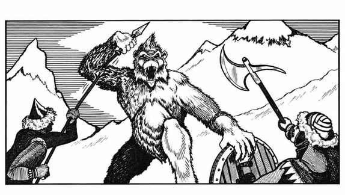

雪怪 · Yeti
 |
|
雪怪只栖息在冰天雪地的地区，很少被温血人类遇到；不幸遇到它们的人往往无法活着讲述经过，因为雪怪喜食人肉。雪怪用双爪攻击，任一爪掷出自然 20 时便抓住并挤压目标，因寒冷额外造成 2–16 点伤害。若雪怪先突袭目标，目标还必须进行麻痹豁免，否则因直视其眼睛而恐惧僵直 3 个战斗轮，期间雪怪可自动命中两次并挤压。
雪怪在距离猎物 10–30 尺内几乎隐形；角色每高于 1 级，正常距离发现它的概率增加 5%。由于适应寒冷，雪怪极易受火焰影响，火焰攻击造成 150% 伤害。巢穴中有 30% 概率有 1–3 只雌性，若有雌性则另有 15% 概率有 2–5 只幼体。雪怪体重超过 300 磅，全身覆有长白毛，双眼淡蓝或近乎无色，爪和牙齿象牙白。